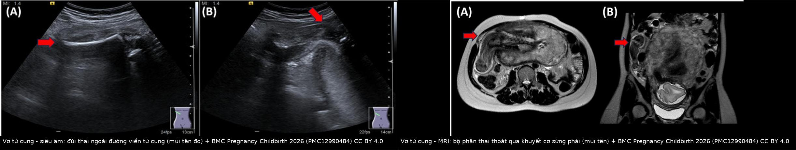
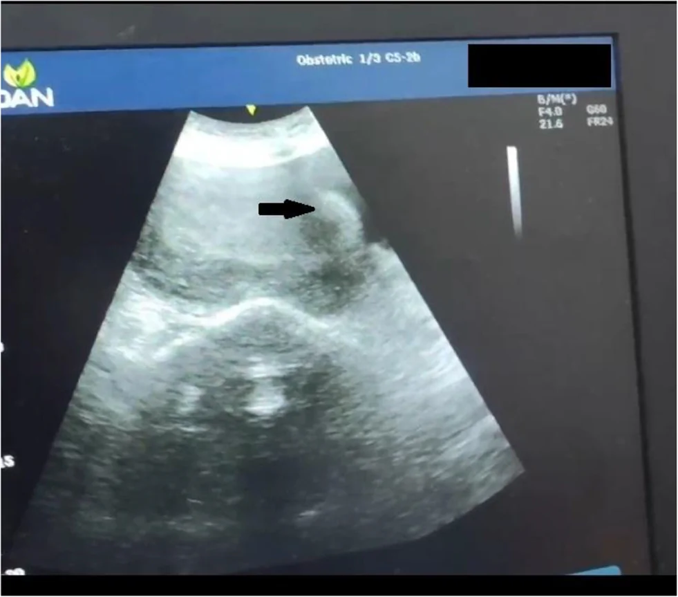
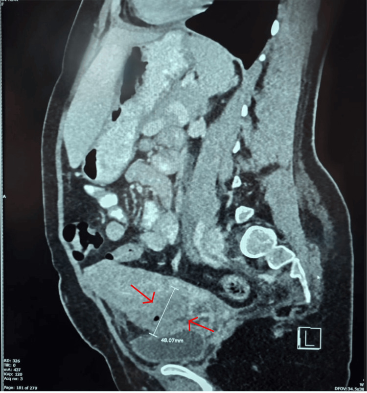
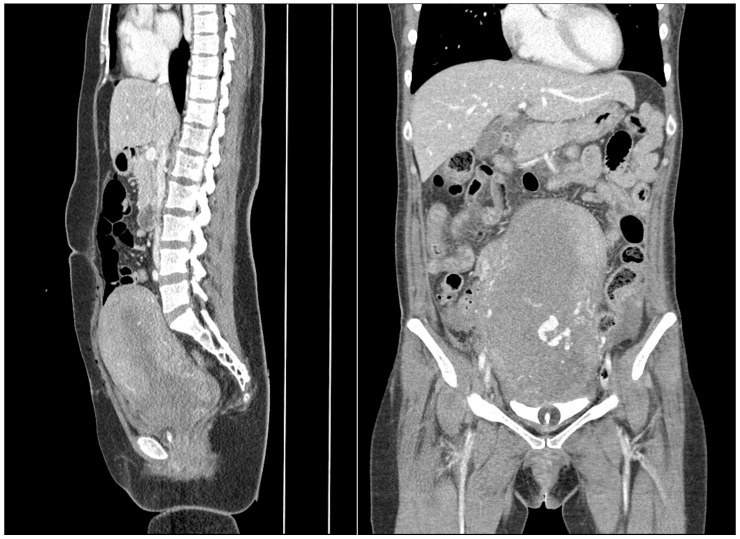

1728 — Chảy máu sau vỡ tử cung: khâu bảo tồn, bóng chèn, thuyên tắc động mạch tử cung và khi nào cắt tử cung / Hemorrhage after uterine rupture: conservative repair, balloon tamponade, uterine artery embolization, and when to hysterectomize
Tags: pattern:vo-tu-cung pattern:dich-o-bung pattern:chay-mau vung:tu-cung-phan-phu protocol:SA-cap-cuu protocol:CT-bung score:shock-index score:4T
Mức chắc chắn (certainty): tổng hợp y văn (literature synthesis) — ghép 1 đoàn hệ 74 ca vỡ tử cung/115.121 ca sinh (Front Glob Womens Health 2026, PMC13438401), 1 đoàn hệ 51 ca chảy máu sau sinh (PPH) có CT cản quang (J Clin Med 2026, PMC13413381), 1 đoàn hệ 162 ca PPH trước/sau khi đưa bóng chèn vào thực hành (J Clin Med 2026, PMC12842071), 1 tổng quan hệ thống 31 bài về mô khâu chèn (Med Sci 2026, PMC13706869), 1 đoàn hệ 230 ca PPH (World J Emerg Surg 2024, PMC11293252) và 4 ca nguyên văn có ảnh (PMC12990484, PMC13544788, PMC12917422, PMC12680439). Không có RCT riêng cho vỡ tử cung; các tỷ lệ thành công của bóng chèn/thuyên tắc dưới đây lấy từ PPH nói chung, không phải riêng vỡ tử cung — đây là giới hạn thật của bằng chứng, không được đọc như số liệu của vỡ tử cung.
1. Tổng quan bệnh học – cơ chế hình ảnh
- Vỡ tử cung (uterine rupture) là rách toàn bộ 3 lớp thành tử cung (nội mạc – cơ – thanh mạc), khác nứt sẹo/dehiscence chỉ mất liên tục cơ nhưng thanh mạc còn. Chảy máu sau vỡ đến từ 3 nguồn cùng lúc: (1) động mạch tử cung và các nhánh cung (arcuate)/xoắn (spiral) ở bờ rách, (2) giường bánh nhau nếu vỡ ngang vùng bám, (3) đờ tử cung do mất cơ co và do máu thấm cơ — vì vậy khâu kín lỗ rách không đủ nếu tử cung vẫn đờ và rối loạn đông máu chưa được xử lý.
- Tần suất và bối cảnh (số liệu trung tâm): 74/115.121 ca sinh = 0,06%; 43% trên tử cung có sẹo, 57% trên tử cung KHÔNG sẹo ở một trung tâm tiếp nhận tuyến cuối (PMC13438401). Ở nước thu nhập cao, vỡ chủ yếu gặp khi thử sinh sau mổ lấy thai (TOLAC) với tần suất 0,3–0,7% (bài 1717); ở nơi thiếu chăm sóc tiền sản, đờ tử cung – chuyển dạ tắc nghẽn – ấn đáy tử cung là yếu tố chính.
- Biểu hiện lâm sàng rất dễ bỏ sót: đau bụng 82%, suy thai/thai chết trong tử cung 65%, ra máu âm đạo 47%, huyết động không ổn 24% (PMC13438401). Nghĩa là hơn một nửa ca KHÔNG ra máu âm đạo và 76% ca còn huyết áp ổn lúc vào — không được dùng "không ra máu, huyết áp bình thường" để loại vỡ.
- Hậu quả khi chẩn đoán muộn (con số để quyết định): cắt tử cung 23%, truyền > 2 đơn vị máu 71%, tử vong mẹ 1,4%, tử vong chu sinh 35,1%; ở nhóm vỡ không sẹo bị bỏ sót: cắt tử cung 50%, tử vong sơ sinh 87,5%, tử vong mẹ 12,5% (PMC13438401). Thời gian từ khởi phát đến chẩn đoán 5,6 giờ ở ca xử lý sớm so với > 24 giờ ở ca bỏ sót.
- Chỉ số sinh tồn quan trọng hơn huyết áp: shock index (SI = nhịp tim/huyết áp tâm thu) — SI 0,6–1 = sốc nhẹ, 1–1,4 = sốc vừa, ≥ 1,4 = sốc nặng (PMC11293252). Ca vỡ tử cung 28 tuần có mạch 107, huyết áp 100/60 → SI 1,07 trong khi hemoglobin vẫn 12,6 g/dL (PMC13544788): Hb bình thường không loại trừ mất máu cấp, vì Hb chỉ giảm sau khi pha loãng.
- TẠI SAO hình ảnh thấy được (vật lý):
- Siêu âm (US): máu loãng và nước ối trống âm vì âm truyền qua dịch gần như không phản xạ; cục máu đông có nhiều giao diện mô – dịch nên tăng âm; cơ tử cung trung âm, mỡ quanh tử cung tăng âm → chỗ mất liên tục cơ hiện thành "khe" giữa hai bờ cơ, và bộ phận thai nằm ngoài đường viền tử cung là dấu hiệu quyết định.
- CT: độ suy giảm tia X tỷ lệ với mật độ điện tử. Máu tụ cấp ~ 40–60 HU (đậm hơn nước 0–15 HU, ngang cơ); thoát mạch hoạt động (contrast extravasation, EV) chứa iod (Z = 53) nên ≥ 100 HU, gần bằng đậm độ động mạch kế cận. Nếu chụp không cản quang, máu tụ và EV cùng đậm độ → không phân biệt được, đây là lý do bắt buộc CT có cản quang khi tìm nguồn chảy.
- MRI: tín hiệu T2 giảm khi mô mất nước tự do → cơ tử cung T2 thấp, nước ối T2 rất cao, sẹo xơ T2 thấp; methemoglobin trong hồng cầu vỡ làm T1 sáng ở máu bán cấp. Vì vậy MRI vừa thấy khuyết cơ, vừa thấy máu tụ cũ, vừa thấy bộ phận thai thoát qua khuyết (PMC12990484).
- TẠI SAO bóng chèn đơn thuần thất bại trong vỡ tử cung: bóng tạo áp lực chỉ khi buồng tử cung kín. Khi có khuyết thành, bóng thoát ra ổ bụng/âm đạo, không tạo được áp lực, thậm chí làm rộng vết rách; đã có ca thủng tử cung do bóng chèn trong PPH thứ phát (Cureus 2025, PMC12680439). Vì vậy bóng chèn là bước SAU khi đã khâu kín, không phải bước thay thế khâu.
2. Mẫu hình + chẩn đoán phân biệt theo vị trí (Gamut)
Hai câu hỏi định vị quyết định xử trí: máu chảy vào đâu và tử cung còn khả năng co không.
Gamut theo đường máu đi:
- Vỡ hoàn toàn vào ổ phúc mạc: máu tự do + thai/bộ phận thai ngoài tử cung → mổ ngay, không chờ CT.
- Vỡ ra dây chằng rộng/ngoài phúc mạc: máu tụ cạnh tử cung, có thể KHÔNG ra máu âm đạo, đau một bên, thiếu máu không rõ nguồn → dễ bỏ sót; US/CT thấy khối cạnh tử cung, đẩy tử cung sang bên.
- Vỡ ở đoạn dưới/sẹo mổ lấy thai: máu qua cổ tử cung ra âm đạo, dễ nhầm "sót nhau/đờ tử cung"; khuyết sẹo thấy rõ trên US/CT (PMC12917422).
- Vỡ trên bánh nhau cài răng lược (PAS): chảy máu dữ dội từ giường bánh nhau, không cầm được bằng khâu đơn thuần, nguy cơ cắt tử cung cao.
- Vỡ do chấn thương (tử cung không sẹo): máu ổ bụng + thai ngoài tử cung trên FAST; gãy xương chậu có thể che lấp (PMC13644821).
- Vỡ muộn/sau sinh (delayed): 1 tuần sau sinh đường âm đạo, đau lưng – ra máu ít, máu tụ có khí trong khuyết sẹo (PMC12917422).
- Không vỡ nhưng chảy máu: đờ tử cung đơn thuần, sót nhau, giả phình động mạch tử cung, rối loạn đông máu — bắt buộc loại trừ vỡ trước khi dùng bóng/UAE.
Gamut theo mẫu hình "khuyết thành cơ tử cung":
- Vỡ toàn bộ 3 lớp, bờ rách nham nhở, máu tụ ± bộ phận thai ngoài.
- Nứt sẹo/dehiscence: cơ mất liên tục nhưng thanh mạc còn, thai còn trong buồng, màng ối phồng vào chỗ khuyết.
- Sẹo mỏng đơn thuần: cơ còn liên tục, không có máu tự do.
- Thủng tử cung do can thiệp (nạo, đặt dụng cụ, bóng chèn): khuyết khu trú + khí trong ổ bụng/âm đạo, tiền sử thủ thuật.
- Giả phình động mạch tử cung: ổ tăng quang thì động mạch, "yin–yang" + to-and-fro trên Doppler, thường PPH muộn (bài 1723).
- Rách cổ tử cung/âm đạo: máu âm đạo nhiều nhưng tử cung nguyên vẹn — soi âm đạo là chốt.
3. Bảng so sánh phân biệt (ma trận đối chiếu)
| Thực thể (entity) | Hình ảnh điển hình (US/CT/MRI) | Chốt vào (rule-in) | Chốt loại (rule-out) | Gợi ý xác nhận |
|---|---|---|---|---|
| Vỡ tử cung hoàn toàn | Mất liên tục cả 3 lớp, bộ phận thai/thai ngoài đường viền tử cung, dịch ổ bụng; CT có máu tụ ± EV | Thai/bộ phận thai NGOÀI tử cung + mất liên tục cơ + dịch ổ bụng | Thai còn trong buồng, cơ liên tục, không dịch → không vỡ | Mổ ngay; US tại giường là đủ, không chờ CT nếu huyết động không ổn |
| Nứt sẹo/dehiscence | Khuyết cơ khu trú tại sẹo, thanh mạc/màng ối còn, thai trong buồng; có thể ít dịch | Khuyết cơ + thai còn trong buồng + không máu tự do nhiều | Thai ra ổ bụng + máu tự do → đã vỡ hoàn toàn | MRI/CT nếu siêu âm khó; mổ có kế hoạch |
| Đờ tử cung đơn thuần | Tử cung to, cơ dày đều, không khuyết cơ, buồng trống, ít dịch | Không có khuyết thành cơ + tử cung mềm, to | Có khuyết cơ/bộ phận thai ngoài → không phải đờ đơn thuần | Xử lý theo 4T; bóng chèn/uterotonic |
| Sót nhau (tissue) | Khối tăng âm trong buồng, mạch máu nuôi trong khối trên Doppler, buồng giãn | Khối trong buồng + mạch nuôi + tiền sử chưa sạch | Không khối trong buồng → không phải sót | US; nong gắp/nội soi buồng; UAE kém hiệu quả ở nhóm tissue |
| Giả phình động mạch tử cung | Ổ tăng quang thì động mạch, giữ hình thì muộn; Doppler to-and-fro | Ổ tăng quang giữ hình + mạch nuôi rõ | Không có ổ mạch, chỉ máu tụ → không phải giả phình | CTA/DSA; nút mạch (bài 1723) |
| Vỡ trên PAS | Bánh nhau mất dải cơ với bàng quang, lacuna, tăng sinh mạch, vỡ thành ± thai ngoài | PAS + mất liên tục cơ tại vị trí bánh nhau | Bánh nhau mặt sau, dải cơ còn → không PAS | MRI; mổ có kế hoạch + chuẩn bị cắt tử cung |
| Vỡ ngoài phúc mạc (dây chằng rộng) | Khối máu tụ cạnh tử cung, đẩy tử cung sang bên; có thể không dịch ổ bụng | Máu tụ cạnh tử cung + thiếu máu không tương xứng máu ra ngoài | Máu tự do khắp ổ bụng → vỡ vào phúc mạc | CT có cản quang; mổ |

Trái: siêu âm bụng phải — đùi thai nằm ngoài đường viền tử cung (mũi tên đỏ); phải: MRI — bộ phận thai thoát qua khuyết cơ ở sừng phải (mũi tên). Nguồn: BMC Pregnancy Childbirth 2026 (PMC12990484), CC BY 4.0; ảnh ghép letterbox, không crop/kéo giãn.Ba dấu hiệu quyết định trên mặt cắt
- Mất liên tục thành cơ tại đúng vị trí sẹo — đo chiều dài khuyết (mm) và mô tả bờ cơ (nham nhở = cấp; nhẵn = mạn).
- Bộ phận thai ngoài tử cung — dấu hiệu chốt vỡ hoàn toàn, không cần chờ xét nghiệm.
- Máu tụ + khí trong khuyết sẹo — khí có thể từ âm đạo sau sinh, nhưng khí + sốt + khuyết rộng gợi hoại tử/nhiễm và là lý do mổ sớm (PMC12917422: khuyết 28 mm, máu tụ 61 × 61 × 56 mm = 109 mL, vỡ 3 cm ở góc trái tử cung).
4. Protocol chụp + hệ phân độ/điểm chuẩn hóa
4.1. Hồi sức song song với chẩn đoán (không chờ hình ảnh)
- Hai đường truyền lớn, máu 1:1:1 (hồng cầu:tươi:tiểu cầu) khi mất máu ồ ạt; calci bù theo từng đơn vị máu.
- Tranexamic acid 1 g IV trong 3 giờ đầu (WOMAN 2017), nhắc lại 1 g nếu còn chảy; fibrinogen < 2 g/L là ngưỡng hành động; theo dõi lactate (nhóm phải mổ: 4,54 vs 2,85 mmol/L, PMC11293252).
- Shock index thay cho "huyết áp còn ổn": SI ≥ 1 là dấu hiệu sớm; SI ≥ 1,4 là sốc nặng.
- Quyết định mổ không phụ thuộc CT: huyết động không ổn + thai ngoài tử cung trên US → mổ ngay.
4.2. Chọn hình ảnh
| Tình huống | Ưu tiên | Lý do |
|---|---|---|
| Huyết động không ổn, nghi vỡ | US tại giường (FAST) → mổ | CT làm chậm cầm máu; US thấy dịch ổ bụng + thai ngoài tử cung |
| Huyết động ổn, chưa rõ nguồn | CT bụng–chậu có cản quang (thì động mạch + tĩnh mạch cửa) | EV ≥ 100 HU; EV làm tăng 7,4 lần khả năng phải can thiệp (aOR 7,44; 1,58–35,03) |
| Thai còn trong buồng, nghi nứt sẹo | MRI bụng–chậu không cản quang | T2 thấy khuyết cơ + máu tụ cũ; không bức xạ |
| Sau mổ, sốt/thiếu máu tiếp diễn | CT có cản quang | Máu tụ, hoại tử, rò, EV còn sót |
4.3. Thang can thiệp cầm máu (từ ít xâm lấn đến triệt để)
| Bước | Chỉ định | Hiệu quả đã báo cáo | Ghi chú |
|---|---|---|---|
| Khâu tử cung 2 lớp | Mọi vỡ có thể bảo tồn | Nền tảng; không có RCT | Cắt bờ hoại tử, tránh nạo buồng tử cung |
| Mô khâu chèn (B-Lynch, Hayman, Cho) | Đờ tử cung sau khi đã khâu kín | 73,9–100% (31 bài); B-Lynch 79,1%; + thắt ĐM tử cung hai bên > 90% | Không dùng khi còn khuyết thành hở |
| Bóng chèn trong tử cung (UBT) | Đờ tử cung, buồng kín | Bakri 66,7–80%; thể tích bơm trung vị 150 mL (60–500) | Bóng không thay thế khâu; nguy cơ thủng/làm rộng vết rách |
| Thuyên tắc động mạch tử cung (UAE) | BN ổn định, không chảy máu ồ ạt vào ổ bụng | Lần đầu 72,4–81,3%, cuối cùng 82,8–87,5% | Tone 87–95,7% nhưng tissue chỉ 16,7–75%; biến chứng: thiếu máu cơ, hoại tử tử cung |
| Cắt tử cung | Không cầm được máu, tử cung hoại tử, PAS xâm lấn | 23% ca vỡ tử cung; 50% ở vỡ không sẹo bỏ sót | Quyết định không chậm khi đã thất bại 2 bước |
- Con số đối chiếu để không hứa hẹn quá mức: trong 39.327 ca sinh, phẫu thuật bảo tồn đạt 73,9–80,4%, cắt tử cung 19,6%, biến chứng sớm 27,2% (chủ yếu DIC/suy tạng); trong 30.271 ca sinh, PPH 2,3%, B-Lynch 75%, Bakri 66,7%, thắt ĐM tử cung 66,7% (dẫn trong PMC13706869).
- Thứ tự ưu tiên khi vỡ + đờ tử cung: khâu kín → mô khâu chèn ± thắt ĐM tử cung → bóng chèn (sau khi kín) → UAE nếu ổn định → cắt tử cung. Làm bóng trước khi khâu là sai về cơ học, không phải chỉ sai về thứ tự.
flowchart TD
A[Vỡ tử cung xác nhận] --> B{Huyết động ổn?}
B -->|Không| C[Mổ mở ngay: lấy thai, kẹp ĐM tử cung]
B -->|Có| D[CT cản quang: tìm thoát mạch và máu tụ]
D --> E{Thoát mạch hoặc máu ổ bụng nhiều?}
E -->|Có| C
E -->|Không| F[Mổ có kế hoạch: khâu 2 lớp]
C --> F
F --> G{Còn chảy máu?}
G -->|Không| K[Theo dõi: Hb, fibrinogen, lactate, nước tiểu]
G -->|Có, tử cung còn sống| H[Mô khâu chèn B-Lynch ± thắt ĐM tử cung]
H --> I{Còn chảy?}
I -->|Không| K
I -->|Có| J[Bóng chèn sau khi đã đóng kín ± UAE nếu ổn định]
J --> L{Còn chảy?}
L -->|Không| K
L -->|Có| M[Cắt tử cung]
4.4. Sau mổ
- Theo dõi 24–48 giờ: SI, Hb, fibrinogen, lactate, nước tiểu; CT/US lại nếu Hb tiếp tục giảm hoặc sốt (máu tụ, hoại tử, rò).
- Kháng sinh khi có khí trong máu tụ/hoại tử; không nạo buồng tử cung sau vỡ vì nguy cơ làm rộng khuyết.
- Tư vấn sinh lần sau: vỡ tử cung tái phát 10% (6–17%), 0% nếu sẹo cũ ở đoạn dưới so với 8,6% nếu ngoài đoạn dưới; mổ chủ động 36–38⁶⁄₇ tuần (bài 1726).
5. Biến thể bình thường và cạm bẫy
- "Không ra máu âm đạo" không loại trừ vỡ: 53% ca vỡ không có máu âm đạo (PMC13438401); máu có thể chảy vào dây chằng rộng hoặc ổ bụng.
- Hb bình thường trong giờ đầu: ca 28 tuần có Hb 12,6 g/dL nhưng SI 1,07 và thai đã ngoài tử cung (PMC13544788) — dùng SI, lactate, dịch ổ bụng, không dựa Hb.
- "Tử cung rỗng" sau chấn thương: nghĩ vỡ tử cung, không phải sảy thai hoàn toàn; hỏi thai kỳ ở mọi phụ nữ tuổi sinh sản bị chấn thương (PMC13644821).
- Bóng chèn không phải "van an toàn": bóng trong buồng tử cung có khuyết thành sẽ thoát ra ngoài, không cầm máu và có thể làm rộng vết rách (PMC12680439).
- CT không cản quang bỏ sót EV: EV ≥ 100 HU, gần bằng đậm độ động mạch; không có thuốc cản quang thì không thể phân biệt với máu tụ 40–60 HU.
- Khí trong máu tụ: có thể do không khí âm đạo sau sinh; nhưng khí + sốt + khuyết sẹo rộng phải nghĩ hoại tử/nhiễm và mổ sớm, không chờ kháng sinh.
- Thỏa mãn tìm kiếm (satisfaction of search): gãy xương chậu/xương đùi trên phim chấn thương làm bỏ qua dịch ổ bụng; FAST phải đọc cả dịch ở túi cùng.
- Đo độ dày sẹo không đủ: LUS/RMT có AUC 0,60–0,61 (bài 1717/1726) — không dùng một trị số mm để quyết định mổ hay chờ.
6. Tự lượng giá — Blind Quiz
Ca 1 — Thai 30 tuần 2 ngày, đau hông phải đột ngột, tiền sử cắt sừng tử cung phải do thai kẽ 5 tháng trước khi mang thai.
- Câu hỏi: Cấu trúc nằm ngoài đường viền tử cung là gì? Vì sao đau khu trú bên phải? Chẩn đoán và bước tiếp theo?
Bấm để hiện đáp án (findings + chẩn đoán)
- Findings: (A) đùi thai ngoài đường viền tử cung ở bụng phải; (B) khuyết cơ ở sừng phải, bộ phận thai thoát qua; MRI xác nhận vỡ tại sừng phải — đúng vị trí đã cắt sừng tử cung.
- Chẩn đoán: vỡ tử cung tại sẹo can thiệp sừng tử cung (interstitial) — mô sẹo cơ mỏng, thai lớn dần làm rách.
- Xử trí: mổ ngay lấy thai + khâu 2 lớp; không chờ CT vì đã thấy thai ngoài tử cung.
- Nguồn ảnh: BMC Pregnancy Childbirth 2025 (PMC12990484), CC BY 4.0.
Ca 2 — Thai 28 tuần, đau bụng 14 giờ, ra máu 15 mL, thai máy giảm; mạch 107, huyết áp 100/60, Hb 12,6 g/dL.

- Câu hỏi: Mũi tên chỉ gì? Vì sao Hb bình thường mà vẫn phải mổ? 3 chẩn đoán phân biệt?
Bấm để hiện đáp án (findings + chẩn đoán)
- Findings: mất liên tục thành cơ đoạn dưới (mũi tên đen); thai không còn trong buồng, thai chết nằm trong ổ bụng, dịch ở túi cùng Morrison/Douglas.
- Chẩn đoán: vỡ tử cung hoàn toàn trên sẹo mổ lấy thai; SI = 107/100 = 1,07 → sốc vừa dù Hb 12,6 g/dL (Hb chưa pha loãng).
- Phân biệt: đờ tử cung + sót nhau, nhau bong non, vỡ tử cung do chấn thương.
- Nguồn ảnh: Int J Surg Case Rep 2026 (PMC13544788), CC BY-NC 4.0.
Ca 3 — 1 tuần sau sinh đường âm đạo (VBAC), đau lưng – bụng dưới, ra máu ít, Hb giảm từ 12,0 xuống 10,3 g/dL.

- Câu hỏi: Đo gì trên ảnh? Vì sao có khí trong khối? Chọn mổ hay theo dõi?
Bấm để hiện đáp án (findings + chẩn đoán)
- Findings: khuyết sẹo 28 mm, máu tụ 61 × 61 × 56 mm (109 mL) từ buồng tử cung qua sẹo ra giữa tử cung – bàng quang, có khí; vỡ 3 cm ở góc trái tử cung, máu ổ bụng 50 mL.
- Chẩn đoán: vỡ sẹo mổ lấy thai muộn sau VBAC; khí có thể do âm đạo, nhưng khuyết rộng + máu tụ lớn → mổ (khâu 2 lớp).
- Bài học: Hb giảm 1,7 g/dL + đau sau sinh là cửa vào của vỡ muộn, không phải "đau tử cung co hồi".
- Nguồn ảnh: Cureus 2026 (PMC12917422), CC BY 4.0.
Ca 4 — PPH sau sinh, chụp CT có cản quang; hai bệnh nhân (trái: không thoát mạch; phải: có thoát mạch).

- Câu hỏi: Dấu hiệu nào quyết định can thiệp? Nếu ảnh phải là vỡ tử cung đã khâu, bước tiếp theo là gì?
Bấm để hiện đáp án (findings + chẩn đoán)
- Findings: ảnh phải có ổ tăng quang trong buồng tử cung, đậm độ gần động mạch = thoát mạch hoạt động; ảnh trái không có.
- Ý nghĩa: EV làm tăng 7,4 lần khả năng phải can thiệp (aOR 7,44); nhóm EV+ có cắt tử cung 30,4% vs 7,1%, mất máu > 2.000 mL 34,8% vs 3,6%, DIC 30,4% vs 7,1%.
- Xử trí: huyết động ổn → UAE; nếu đã vỡ và đang chảy trong ổ bụng → mổ thay vì UAE.
- Nguồn ảnh: J Clin Med 2026 (PMC13413381), CC BY 4.0.
Bài liên quan chéo
- 1717 – Vỡ tử cung trên sẹo mổ lấy thai: 0,3–0,7%, prostaglandin aOR 2,58, AUC đo sẹo 0,60
- 1726 – Thai kỳ sau một ca vỡ tử cung: tái phát 10%, mổ chủ động 36–38⁶⁄₇ tuần
- 1723 – Giả phình động mạch tử cung: yin–yang, to-and-fro, nút mạch
- 1725 – Vỡ ối non tháng trước 24 tuần trên sẹo mổ lấy thai
- 1816 – REBOA: chọn bóng, chiều dài chèn, ngưỡng thời gian
- 040 – Tràn dịch màng phổi: nguyên lý dịch – đậm độ trên CT
Ảnh
images/composite_vo-tu-cung.jpg— ghép US + MRI (PMC12990484), CC BY 4.0.images/1728_vo-tu-cung_SA_PMC13544788-F1.jpg— US khuyết cơ (PMC13544788), CC BY-NC 4.0.images/1728_vo-seo-cu_CT_PMC12917422-F2.jpg— CT máu tụ có khí (PMC12917422), CC BY 4.0.images/1728_thoat-mach_CT_PMC13413381-F2.jpg— CT có/không thoát mạch (PMC13413381), CC BY 4.0.- Nguồn, giấy phép và ghi chú phái sinh từng ảnh:
images/CREDITS.md.
Không dùng để chẩn đoán độc lập khi chưa có người hướng dẫn.